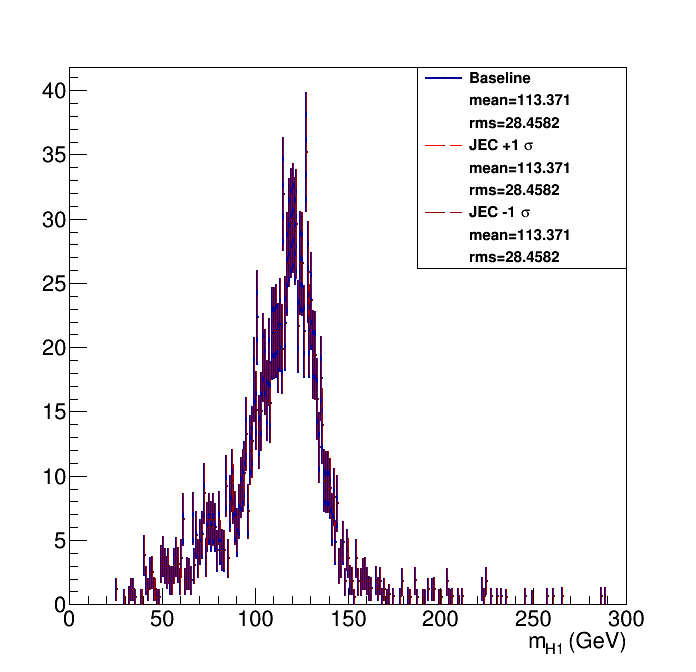
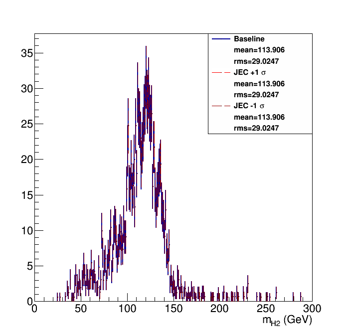
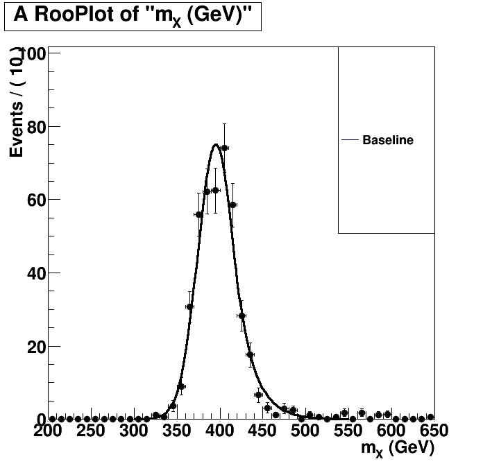
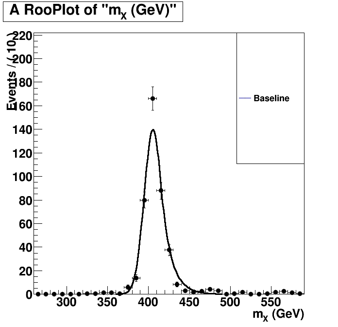

| Higgs 1 mass  | Higgs 2 mass  |
Without Kin-Fit. Fitted to an Exp-Gauss-Exp function.=== Baseline plot === |
With Kin-Fit. Fitted to an Exp-Gauss-Exp function.=== Baseline plot === norm = 79.2469 sg_p0 = 405.529 0.589025 sg_p1 = 10.6828 0.458626 sg_p2 = 0.90223 0.0678267 sg_p3 = 4.13622 2.89608 btag lnN 1.07816 - |